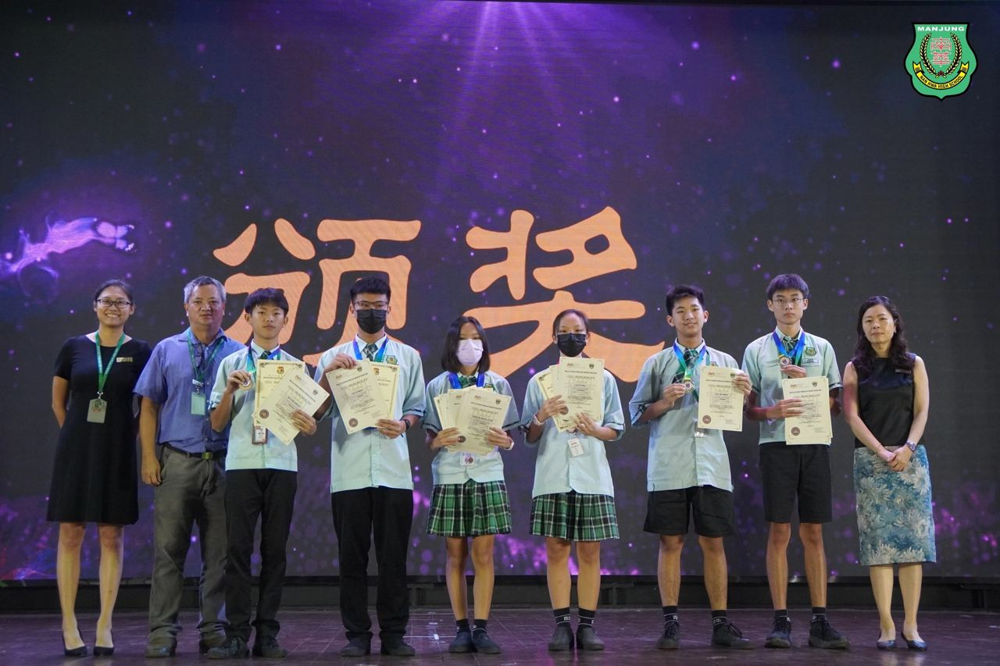
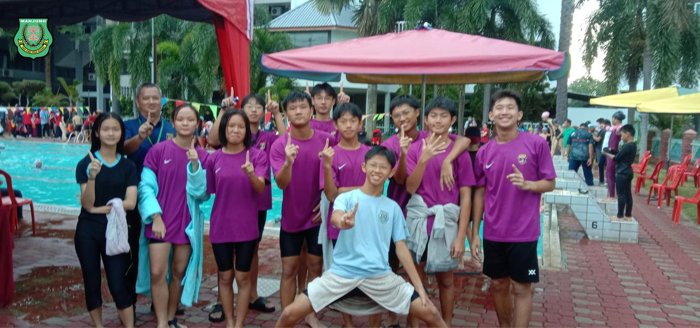
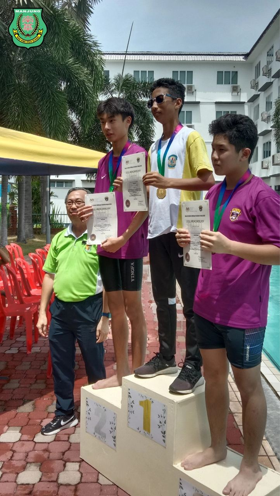
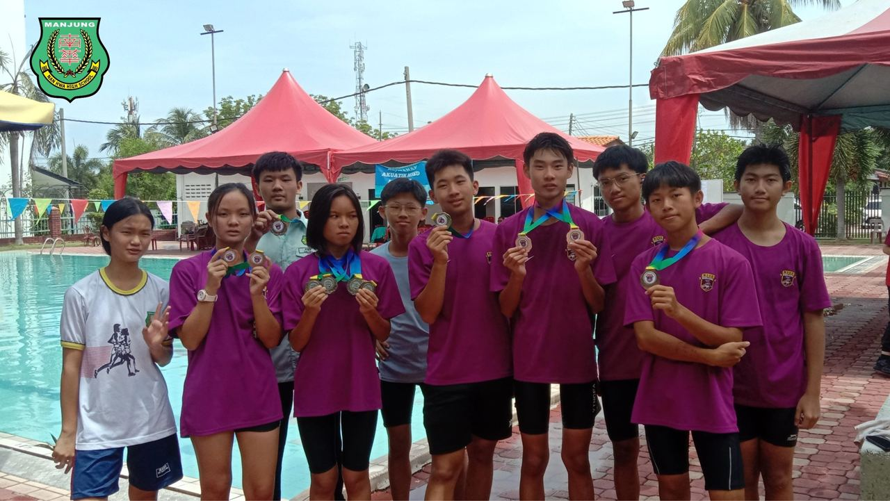
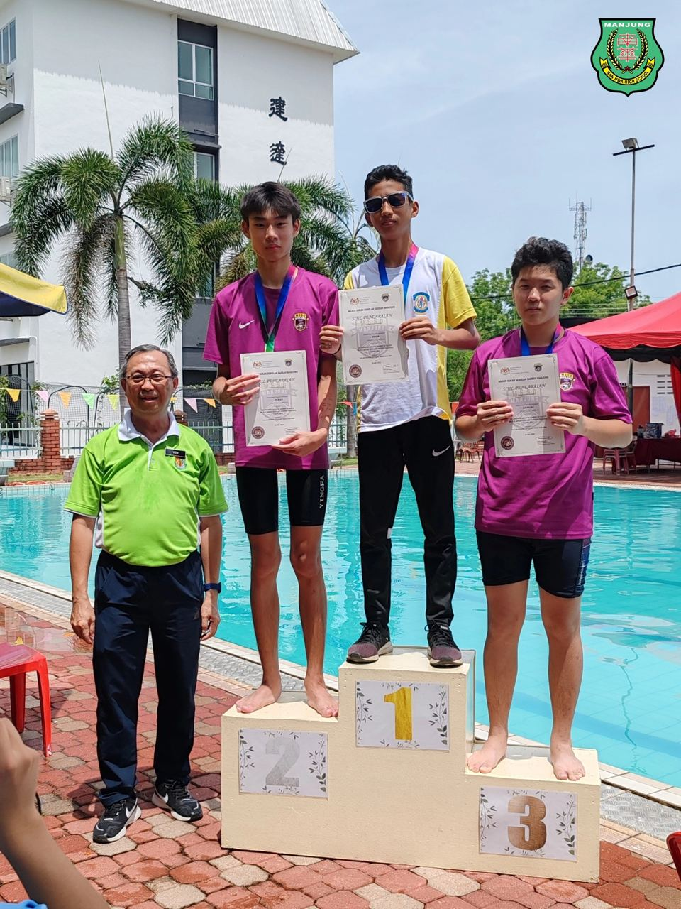
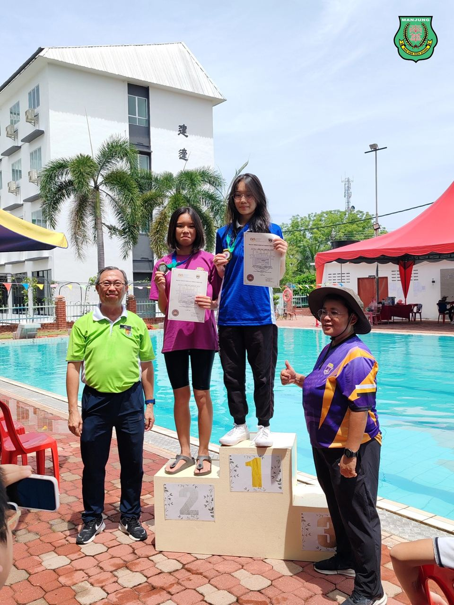
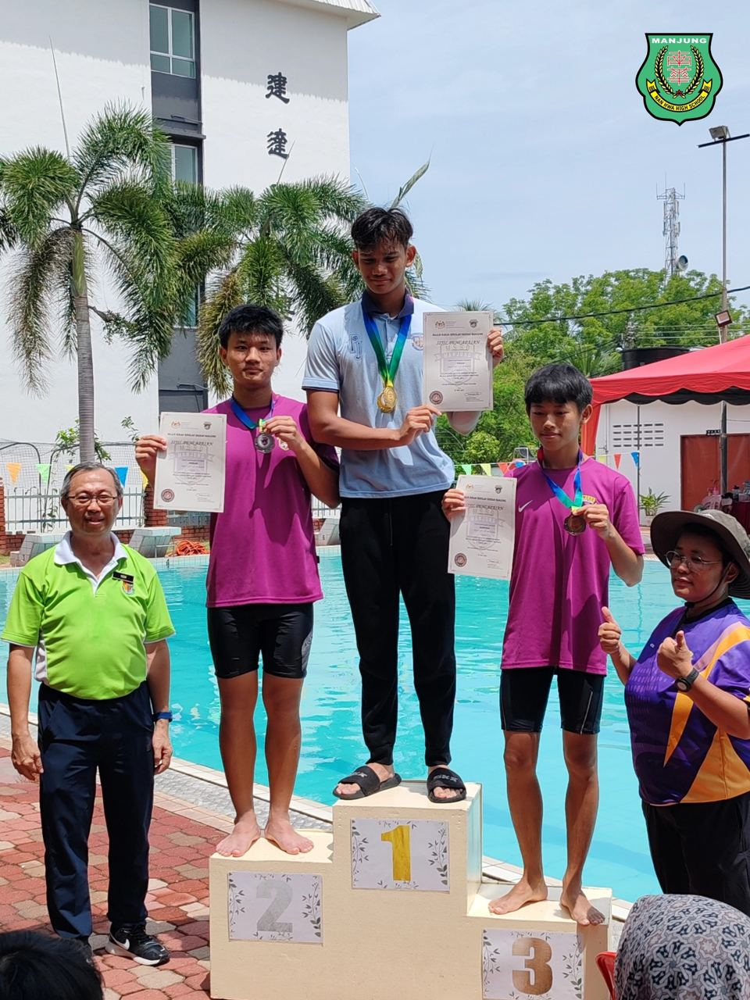

曼绒县游泳学联赛
曼绒县游泳学联赛
南华独中斩获8银3铜
2024年曼绒县游泳学联赛圆满落幕。曼绒南华独中游泳校队在本次比赛中表现出色，共有6名学生斩获8银3铜的佳绩，为校争光。这些优秀选手也因此获得了代表学校参加霹雳州游泳学联赛的出赛权。
在女子组18岁以下的比赛中，黄伶祺同学表现尤为突出，她在50米蛙式、50米自由式、100米蛙式和100米自由式四个项目中均获得银牌。同组的林思廷同学也不甘示弱，在50米和100米蛙式比赛中分别获得铜牌。
男子组的选手同样表现优异。15岁以下组别中，刘家铭在100米蛙式比赛中摘得银牌，吴航苇则在50米和100米自由式比赛中双双获得银牌。18岁以下组别中，林极深在50米蛙式比赛中获得银牌，雷挺盛则在同一项目中获得铜牌。
对于队员们的出色表现，游泳负责老师林光进表示："游泳是一项需要长期坚持练习的运动，选手们只有不断设定目标并突破自我，才能取得进步。希望同学们能够继续保持耐力和斗志，在未来的比赛中再创佳绩。"
校长陈丽冰博士也对参赛选手们给予了高度评价和鼓励。她引用"天降大任于斯人也，必先苦其心志，劳其筋骨"这句古语，勉励学生们要以拼搏不屈的运动精神，不断提升自己的技艺，为未来站上更广阔的舞台做好准备。相信在接下来的比赛中，学生定能再接再厉，为校争光。
随着曼绒县游泳学联赛的结束，这些优秀的南华独中选手们将代表学校参加即将到来的霹雳州游泳学联赛。
女子组18岁以下
黄伶祺：50米蛙式 银牌
：50米自由式银牌
：100米蛙式 银牌
：100米自由式银牌
林思廷：50米蛙式 铜牌
：100米蛙式铜牌
男子组15岁以下
刘家铭：100米蛙式银牌
吴航苇：50米自由式银牌
：100米自由式银牌
男子组18岁以下
林极深：50米蛙式银牌
雷挺盛：50米蛙式铜牌
#曼绒游泳学联赛 #游泳校队
#南华独中 #曼绒 #实兆远






